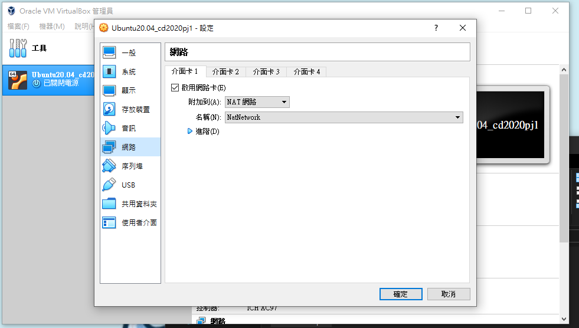
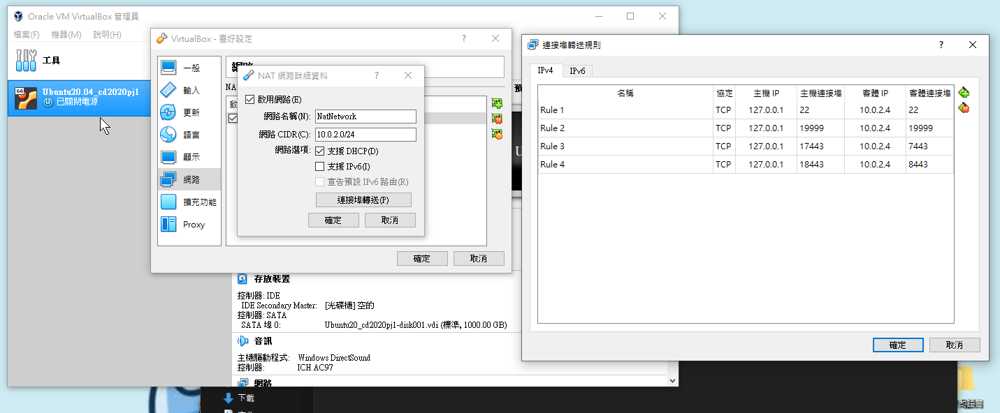

week6~9 <<
Previous Next >> week15~18
week10~14
w10開會紀錄:
作業三:
根據對Topic2和Topic3的閱讀，使用CoppeliaSim、Webots、Onshape提出一個機電一體化項目。
topic2:
coppeliasim:40723246
MSModelingAndTFApproaches.pdf. 207頁:5人
40723216
40723213
40723223
40723241
40723230
MechatronicDesignCases.pdf. 46頁:2人
40723229
40723206
topic3:
MechaFutureAndChallenges.pdf. 38頁:1人
40623246
MechaEducFutureNeed.pdf. 20頁:1人
40723242
google API設置
1.登錄到您的@gm帳戶
2.啟用Google的API
3.按設置同意按鈕按鈕
4.外部用戶類型
5.進入“憑據”頁面
6.OAuth 2.0客戶端ID 類型的憑據
7.(設置網址)授權的JavaScript為：https：// localhost：8443
8.定義URI為：https：// localhost：8443 / login / google /
9.將oauth_gm.txt保存中
10.開啟leo更改其中得config中的scrum為自己命名的txt檔案名稱，並且修改完成之後按下save和darwROC
11.pip install authomatic
12.開啟https://localhost:8443
13.測試是否可以成功運作
以下為操作影片:
ubuntu設置
操作步驟:
1.下載vitualbox、ubuntu等檔案。
2.開啟vitualbox並匯入ubuntu
3.設定網路>選擇nat網路

4.檔案>偏好設定>網路>連接埠轉送>將下圖之數據照抄

5.啟動UBUNTU後輸入密碼:kmol2020，並進入lxterminal
6.依照步驟打開coppeliasim，輸入ls查看內容。
7.cd coppeliasim4_rev4->ls->cd CoppeliaSim_Edu_v4_0_0_Ubuntu18_04->ls->./coppeliaSim.sh。
8.開啟後打開檔案sdc.ttt。
9.開啟啟動器，並開啟下載好的CoppeliaSim四輪車控制器檔案。
10.將檔案中的car_model.py放入編譯器中，並執行。
11.打開CoppeliaSim中的模擬，四輪車開始繞圈即成功。
以下為操作影片:
IPv4 Ubuntu對外連線設定操作
操作影片:
操作步驟:
1.點選檔案->喜好設定->網路->新增一個新的NAT網路。
2.編輯NAT網路->點選連接埠轉送->新增4個新的連接埠轉送埠號。
3.設定主機IP為127.0.0.1；客體IP為10.0.2.4；主機連接埠為22、19999、17443、18443；客體連接埠為22、19999、7443、8443。
4.點選設定->網路->設定主機網路為NAT Network。
5.設定完後，點選啟動，接著輸入密碼kmol2020。
6.開啟LXTermial，輸入ifconfig->輸入sudo apt install net-tools->輸入密碼kmol2020。
7.cd tmp->ls->輸入ping 127.0.0.1測試->cd cd2020pj1->git pull。
8.接著輸入sudo vi wsgi.py編輯內容，按i進行編輯。
9.將近端的host改為10.0.2.4，接著按Esc並輸入:wq存儲。
10.開啟leo，並開啟cd2020pj1.leo，點選Nav搜尋allowExt。
11.點選fileuploadfrom，並將第10行新增一個ttt檔，完成後存儲並關閉leo。
12.cd..,接著在tmp下新增oauth_scrum.txt，輸入sudo vi oauth_scrum.txt。
13.按i編輯，內容先隨便輸入，接著按Esc並輸入:wq存儲。
14.cd cd2020pj1，並輸入python3 wsgi.py啟動。
15.網址為https:/127.0.0.1:18443/alogin。
16.帳號及密碼都為admin，進入後點選fileuploadform，點選要上傳的ttt檔。
17.點選download list檢查檔案是否上傳完成。
18.完成。
第四次小組會議
第一組 第四次會議 (WEEK11)
1.成員簽到等候 2.分工作業進度回報及問題討論 3.有問題的同學提出問題
成員名單
1.40723201 (簽) 已建立完成網站
2.40723206 (簽) 已建立完成網站 小組長
3.40723213 (簽) 已建立完成網站
4.40723216 (簽) 已建立完成網站
5. 40723223(簽) 已建立完成網站
6.40723226 (簽) 已建立完成網站
7.40723229 (簽) 已建立完成網站 小組長
8.40723230 () 已建立完成網站
9.40723241 (簽) 已建立完成網站
10.40723242 (簽) 已建立完成網站 小組長
11.40723246 (group leader) (簽) 已建立完成網站 12.40732319 ()
topic2:
coppeliasim:40723246
MSModelingAndTFApproaches.pdf. 207 頁:6 人
40723201 1-30
40723213 31-60
40723216 61-90
40723223 91-120
40723226 121-150
40723246 151-207
MechatronicDesignCases.pdf. 46 頁:2 人
40723229 1-23
40723230 24-46
topic3:
MechaFutureAndChallenges.pdf. 38 頁:2 人
40723206 1-19
40523241 20-38
MechaEducFutureNeed.pdf. 20 頁:1 人
40723246 20
參考資料:
CMS:http://mde.tw/cd2020pj1/content/CMS.html
google 用戶設置影片:
https://drive.google.com/file/d/1G4MzXUIbNRK7z2XdjtxXzhX51zHHw
q85/view?usp=sharing
week6~9 <<
Previous Next >> week15~18